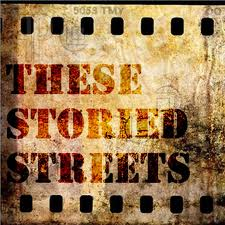

10:00am Toward a More Sustainable Future
Who:
- Shannon Binns - Executive Director of Sustain Charlotte
- Ellison Clary - Director of Charlotte Community Relations, Blue Cross Blue Shield of North Carolina
- David Howard - Charlotte City Council Member and Transportation and Planning Committee Chair
- Terry Shook - Founding Partner and Principal, Shook Kelley
- David Walters - Architect and Coordinator of UNC-Charlotte’s Master of Urban Design Program
What:
As one of the fastest growing cities in America, and with a projected regional population growth of 30% between 2010 and 2030, Charlotte’s transportation system must grow too. While the challenges of doing so are great, the benefits — and need — are even greater.
Charlotte is far from unique in this regard, as urban areas around the nation are facing similar challenges due to surging populations that have outgrown their existing transportation infrastructure. In addition, much of the existing infrastructure has been built for cars, but simply widening roads or building new ones to accommodate the growing number of cars is neither viable nor sustainable.
In this conversation, the founder of local nonprofit Sustain Charlotte will moderate a distinguished panel representing a diversity of experts and viewpoints on the intersection of transportation, land development, and sustainability in the greater Charlotte region.
When: Tuesday, September 4, 2012 from 10:00AM to 11:00AM
Want in? You’ve got to pick up a CREDENTIAL. We have a great line up of speakers and topics. To look at the other topics go to The PPL Schedule, times are subject to change so please check back often.
RESURRECTION
Monday, September 3, 2012 from 7:00PM to 9:00PM
Who:
What: RESURRECTION: A Sustainable Fashion Forum
RESURRECTION – A Forum on Sustainable Fashion is produced by Shawn Gentry of Watusi Creative. It will feature local designers on the forefront of the sustainable fashion movement. Their work is either partly or entirely constructed from repurposed, recycled or upcycled materials or garments.
The 2 hour event will consist of a runway fashion show featuring 40 models, as well as several Q&A segments moderated by MC-extraordinaire and Professor of Fashion Marketing & Management at The Art Institute - Mike Watson. Audience members are invited to engage the designers in conversation. There will also be a Trunk Show for attendees to purchase items from many of the designers, with assistance from professional stylists.
Featured designers:
Frock Shop’s Caroline Cook Frers
Cigi Guzman, owner of The Speakeasy Boutique
Enemy to Fashion’s Caleb Clark
Artist Flavia Lovatelli
Ana Dee of Moonshine Apparel
Tickets to the event are FREE and available at EventBrite: http://resurrectionfashion.eventbrite.com/
Where: Packard Place, 4th Floor, 222 S. Church St., Charlotte, NC
When: Monday, September 3, 2012 from 7:00PM to 9:00PM
Want in? You’ve got to pick up a CREDENTIAL. We have a great line up of speakers and topics. To look at the other topics go to The PPL Schedule, times are subject to change so please check back often.
Yoga
Monday, September 3, 2012 from 5:00PM to 5:30PM
Who:
What: Yoga/Mediation Session
Sharon Lachow-Blumberg combines her professional background in human resources, organizational change, outplacement, with her personal experiences in loss, illness, and work transitions, all boosted by master’s degrees in both organizational and clinical psychology, post graduate training, and a yoga certification. Through this, she has developed a consultancy and training firm for individuals and organizations that designs leadership and organization development programs for women.
Where: Packard Place, 4th Floor, 222 S. Church St., Charlotte, NC
When: Monday, September 3, 2012 from 5:00PM to 5:30PM
Want in? You’ve got to pick up a CREDENTIAL. We have a great line up of speakers and topics. To look at the other topics go to The PPL Schedule, times are subject to change so please check back often.
Youth Civic Engagement
Monday, September 3, 2012 from 3:00PM to 4:00PM
Who:
- Joclyn Sida – Youth CA Delegate
- Casey Aldridge – Founder, League of Young Activists
What: This panel will discuss the role that youth play in civic action, including their involvement in social movements, and the ways that high school students can make a difference through community involvement in local politics, serving as champions for human rights, fighting poverty, and creating a sharing society that grows through tolerance and compassion.
Where: Packard Place, 4th Floor, 222 S. Church St., Charlotte, NC
Want in? You’ve got to pick up a CREDENTIAL. We have a great line up of speakers and topics. To look at the other topics go to The PPL Schedule, times are subject to change so please check back often.
Little Idea
Monday, September 3, 2012 from 2:00PM to 3:00PM
Who:
- Betsy Hauser - President
- Brian Barksdale - Vice President
- Heyward Moore - Engineer
- Sarah Hudson - Online/Social Media Marketer and Graphic/Web Designer
- Alex Adams - Project Manager and Programmer
What:
Little Idea LLC is an invention development company located here in Charlotte, NC. What makes us different is we take a small business approach, having worked with small businesses and started small businesses of our own! Because we provide many different services, we like to refer to our approach as a business in a box.
Some of our services include: research and development, CAD and prototyping, patent searches, branding and marketing materials, marketing, E-commerce setup and web/mobile app development, social media kickstart, tradeshow and manufacturing representation, and promotional video production.
Since we’re starting to become more visible in the community, Charlotte Creates challenged us to put together a creative presentation for the DNC. We decided to challenge ourselves too and create a new product – The Elk, elliptical arms to attach to baby strollers so parents can get exercise! – for under $2,000 in three weeks. What did that include? How about: researching stroller products and manufacturers, creating a working prototype, creating the logo and promotional materials, developing a website that’s user and SEO friendly, creating a social media presence, shooting a promotional video and editing it in two days, putting together test groups, gaining press, and marketing it both online and offline!
For more information and pictures, check us out online at www.thestrollerelk.com or check out our video!
Where: Packard Place, 4th Floor, 222 S. Church St., Charlotte, NC
Want in? You’ve got to pick up a CREDENTIAL. We have a great line up of speakers and topics. To look at the other topics go to The PPL Schedule, times are subject to change so please check back often.
These Storied Streets
Monday, September 3, 2012 from 1:00PM to 2:00PM

Where: Packard Place, 4th Floor, 222 S. Church St., Charlotte, NC
Who: Tom Morgan
What: Presentations and screening of excerpts from These Storied Streets. Join filmmaker Tom Morgan for a discussion about his most recent full-length documentary, These Storied Streets, that provides a look the homelessness and the role bloggers and social media can deepen conversations and drive meaningful change on issues – the poor, the voiceless, and those who find themselves on the margins of American society – are often overlooked by traditional media.
Documentary filmmaker Tom Morgan will present on his most recent film These Storied Streets, a feature-length documentary on the reality of homelessness in America.
“Bloggers and social media are really on the front lines of the issues affecting us everyday,” explained Morgan. “I wanted to speak directly to this critical group of media because they instigate and deepen conversation; they keep the public fully informed, and often drive meaningful change on issues that are typically overlooked by traditional media– issues of the poor, the voiceless, and of those who find themselves on the margins of American society.”
These Storied Streets is a real, raw, and timely documentary about the crisis of homelessness in America. The film, developed with creative counsel and support of Morgan Spurlock (Super-Size Me) and Susan Sarandon, shares a constellation of stories of homelessness expressed by the powerful voices of individuals who experience homelessness every day. The full-length documentary film profiles the homeless, the formerly homeless, and the volunteers and organizations that work tirelessly to get people off the streets.
Following his appearance on The PPL’s stage, Tom is slated to provide a presentation on These Storied Streets to the bi-partisan Congressional Caucus on Homelessness.
Want in? You’ve got to pick up a CREDENTIAL. We have a great line up of speakers and topics. To look at the other topics go to The PPL Schedule, times are subject to change so please check back often.